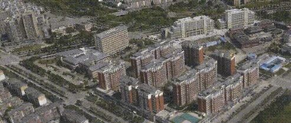

2018科研工作小结
又到写年终小结的时候了，作为一个大学教师，最大的快乐莫过于知识的创造和传承。这一年来在各位前辈、同仁和同学们的支持下，我们集中课题组资源，齐心协力做了三件我们自己觉得非常有意义的事情：
1. 北川新县城可视化震害模拟
2018年上半年我们与多家单位共同合作完成了北川新县城可视化震害模拟。虽然项目不大，但是有特色。在高性能精细化地震动传播模拟、复杂地形及复杂城市环境“场地-城市效应”非线性模拟、基于无人机摄影测量和增强现实的高真实感震害展示等方面都进行了较为成功的尝试。

参阅：场地-城市耦合弹塑性分析+神威太湖之光+无人机 | 三项黑科技助力新北川县城震害预测
该项目针对区域震害模拟的需求，在基于物理模型的地震动输入、复杂地形和复杂场地-建筑群非线性相互作用、高效高真实感震害场景生成等关键科学问题上都有所发展。进而为此后开展的北京通州区震害情境模拟等相关课题提供了更加先进的技术手段。
2. 基于实测地震动的近实时地震破坏速报
自2016年以来，为了验证城市抗震弹塑性分析的合理性，我们在中国地震局等单位的支持下，在一些地震发生后，基于城市抗震弹塑性分析方法分析震中附近典型强震记录可能引起的破坏。2018年6月18日，日本大阪市区发生6.1级地震。在此次大阪地震中，我们收集到了震中附近密集的地震记录。当我们把通过城市抗震弹塑性分析得到的不同台站地面运动破坏力画在地图上，突然发现我们就可以得到一张灾区的震损分布预测图，为灾损评价和应急提供参考。

参阅：从“点”到“面”，由0618大阪地震展望地震破坏力分析2.0系统
随后，我们利用该方法，在中国地震台网中心等单位支持下，利用密集强震台网，对今年国内外多次地震进行了分析，尤其是8月13日、8月14日云南通海5.0级地震和11月30日美国阿拉斯加7.0级地震，该方法都给出了非常有意思的结果。

说到这里，我们特别感谢各位前辈、领导和同仁的大力支持，城市抗震弹塑性分析的一些最新成果，都很快在实际项目上找到了应用的机会，这远比发表几篇论文更让我们感到开心和满足。

某中心城区考虑场地-城市相互作用的城市抗震弹塑性分析

3. 撰写《工程地震灾变模拟：从高层建筑到城市区域》（第二版）
时光飞逝，写作《工程地震灾变模拟：从高层建筑到城市区域》已经是4年前的事情了。这4年多以来，我们课题组在高层建筑的计算模型、设计方法、城市区域震害模拟方法等方面又有了一些进展和变化。所以，今年花了大半年，特别是暑假期间花了不少时间，终于在年底前把书稿交给出版社了。希望新书能尽早面世。

除了上述三个对我们课题组来说大一点的事情外，今年还做了几个没那么大规模，但是也非常有意思的事情。
1. 高层建筑结构体系抗震研究
高层建筑结构体系抗震研究一直是我们课题组的一个重要研究内容。今年在这方面完成了两个工作。
一个是和华东院等单位合作开展的框架-核心筒单重与双重抗侧力体系的对比研究。我国现行抗震规范要求框架-核心筒结构外框必须承担一定比例的地震剪力，作为结构的二道防线。但是也有一些专家对此有不同看法。

我们开展了3栋不同高度、不同设防烈度框架核心筒结构的单重、双重抗侧力体系性能对比，得到了一些很有意思的结果，部分成果已经发表（改变框架-核心筒结构剪力调整策略对其抗震性能影响的研究，工程力学，http://engineeringmechanics.cn/CN/10.6052/j.issn.1000-4750.2017.11.0853）。

简单说，某些案例的单重体系其抗震安全性高于双重体系，而双重体系发挥作用的方式也和我们此前认识的有所不同。这个从道理上也很好理解：10多m长的剪力墙和1-2m粗的柱子，谁的抗剪效率提升更有效是显而易见的。
另一个工作也很有意思，和建研院以及国内多家设计院一起开展了中美抗震规范对比的工作。其基本原则是：同样一个工程，罕遇地震水平一样，由中、美设计单位，分别按照中国规范和美国规范进行设计，看看最后设计结果及其抗震安全性有何差别。我们对典型钢筋混凝土框架、剪力墙、钢支撑框架做了倒塌易损性分析，结果很有意思。


简单来说，结构的倒塌往往是由其最薄弱的部位控制的，如果能够对薄弱部位进行针对性加强，就可以用很低的成本很有效的提高其抗地震倒塌能力。但是一个常规设计的结构，如果不做动力弹塑性分析，如何识别出薄弱部位呢？这个问题其实中美规范都没有解决好。

中美设计规范对比，谁更合理？
2. 工程抗连续倒塌
工程抗连续倒塌研究我们课题组今年来更侧重于设计方法及多灾害防御方面的研究工作。在混凝土结构、钢结构地震与连续倒塌综合防御方面有所进展，特别是钢筋混凝土压拱效应计算方法，得到了比较好的认可，确实是今年的意外之喜。

参阅：一根钢筋混凝土梁，承载力你能算对么？| 新论文：梁的压拱效应计算方法
3. 结构试验
由于去年就得到系里通知，旧实验室2018年要拆除重建，所以2017年push组里学生做了一大批破坏性试验。今年试验相对做得比较少一些，不过也都还挺有意思的。一些试验可能此前还较少有人做过，所以自己还是很喜欢的。

今年做了一组振动台实验，感谢中国地震局工程力学研究所的支持

非结构构件的破坏一直是我们关注的问题
当然教学永远是工作的重点。我一直觉得，既然是工科的学生，一定要有动手做事的能力。所以这些年我们很开心的做了不少好玩的教具，今年继续发展完善并制作了一些新教具。希望未来教学条件改善后，真的能让学生在教室里面搞点小“破坏”。

新添置的火灾教具

新添置的沙土液化教具

新添置的约束和非约束砌体抗震教具
上述教具都是自己动手土法上马的结果，亮点自寻
十年前Krawinkler教授勉励我的三个字（Big idea, Impact, Teamwork），直到今年我才开始大概琢磨明白其含义。回顾2018，内心充满了感激。因为今年做成的每件事情，都是在众多国内外前辈、同仁、朋友的鼎力支持下的结果。非常非常感谢方方面面支持和帮助我的师长和亲友。也在此特别感谢课题组的本科生、研究生、博士后及科研助理，过去的一年大家都辛苦了！

回望过去的40年人生，真的感觉时光飞逝，白驹过隙。展望2019，还有一些更高、更大、更具有挑战性的问题在等着我们。真的很难得有这些宝贵的机遇和条件可以做一点事情。“夫君子之行，静以修身，俭以养德。非澹泊无以明志，非宁静无以致远。夫学须静也，才须学也，非学无以广才，非志无以成学。淫慢则不能励精，险躁则不能治性。年与时驰，意与日去，遂成枯落，多不接世，悲守穷庐，将复何及！”
感谢课题组全体同学的努力工作，感谢给我们提供各种帮助的朋友、领导和师长，祝大家2019新年快乐，身体健康，万事如意！
相关研究
长按识别二维码，关注我们的科研动态